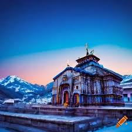
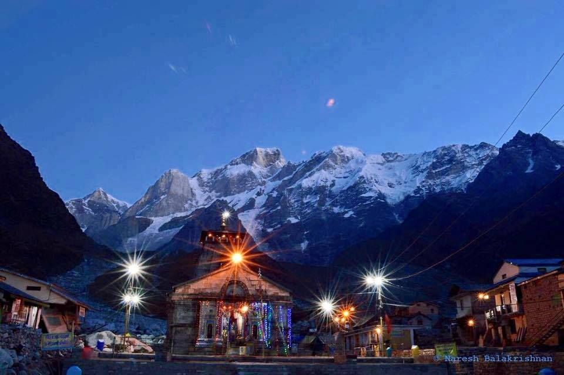
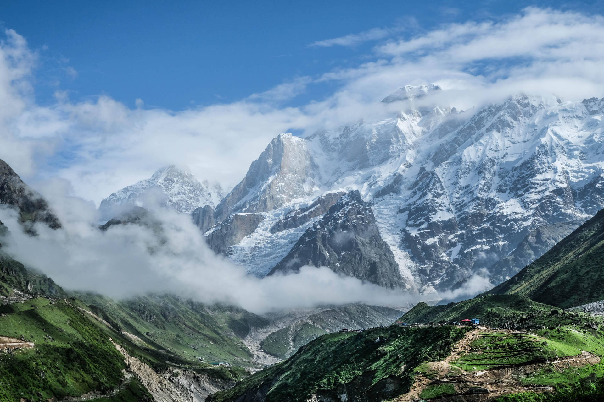

One of the most revered temple destinations of India, Kedarnath town is nestled in the mighty Garhwal Himalayas. The town, built around the revered Kedarnath temple, is located at an altitude of 3,580 m, near Chorabari glacier, which is the source of the Mandakini river. Dedicated to Lord Shiva, the ancient temple has exquisite architecture and is built of extremely large but evenly shaped grey stone slabs. A conical rock formation inside the temple is worshipped as Lord Shiva in his “Sadashiva” form. The Kedarnath temple, dedicated to Lord Shiva, is a part of Char Dham pilgrimage circuit, and is one of the 12 Jyotirlingas of Lord Shiva in India. Behind the Kedarnath temple, stand the Kedarnath peak, Kedar Dome and other Himalayan peaks.



According to the hagiographies based on Madhava's Sankshepa-shankara-vijaya, the 8th century philosopher Adi Shankara died at the mountains near Kedarnath; although other hagiographies, based on Anandagiri's Prachina-Shankara-Vijaya, state that he died at Kanchipuram. The ruins of a monument marking the purported death place of Shankara are located at Kedarnath.[14] Kedarnath was definitely a prominent pilgrimage centre by the 12th century, when it is mentioned in Kritya-kalpataru written by the Gahadavala minister Bhatta Lakshmidhara.Adi Shankara was believed to have revived this temple, along with Badrinath and other temples of Uttarakhand; he is believed to have attained Mahasamadhi at Kedarnath.
Kedarnath Teerth Purohits are the ancient Brahmins of this region, their ancestors (Rishi-Muni) have been worshiping the lingam since the time of Nara-Narayana and Daksh Prajapati. King Janmejay, grandson of the Pandavas, gave them the right of worshiping this temple and donate the whole Kedar region, and they have been worshiping pilgrims ever since.
According to a tradition recorded by the English mountaineer Eric Shipton (1926), "many hundreds of years ago" one priest used to hold services at both the Kedarnath and Badrinath temples, travelling between the two places daily.
Kedharnath Jyothirlinga Temple AADHI SHANKARA
Adi Shankara was an intellectual giant, a genius of linguistics. In the brief span of his life, he walked the length and breadth of this nation. Shankara came from a village called Kaladi, which literally means “beneath the feet.” In the South, we are at the feet of Bharat Mata. Bharat means we always learnt how to be at the feet of the Divine. By being at the feet of the Divine, we evolved and blossomed. This is not a culture of pumped up pomp, but a culture of natural piety.
Adi Shankara said, “Everything is maya.” Maya means an illusion, in the sense that you are not seeing it the way it is. Here you are with this seemingly solid body, but with the food that you eat, the water that you drink, and the air that you breathe, the cells of your body are being exchanged on a daily basis. This means after some time, you have a completely new body. But in your experience, it looks like it is the same thing – this is maya. Similarly, the way you perceive existence through the five senses, is completely off the mark – this is the illusion, the maya, that Shankara talked about.
There is a story how once in Kashi, Shankara was entering a temple in the early morning after his bath. Then a chandala came in his way. Chandalas were a particular caste who maintained the cremation grounds. They were considered the lowest of the lowest and inauspicious. There was a belief that if you see a chandala, death will come. No one wanted anything to do with them and they were shunned.